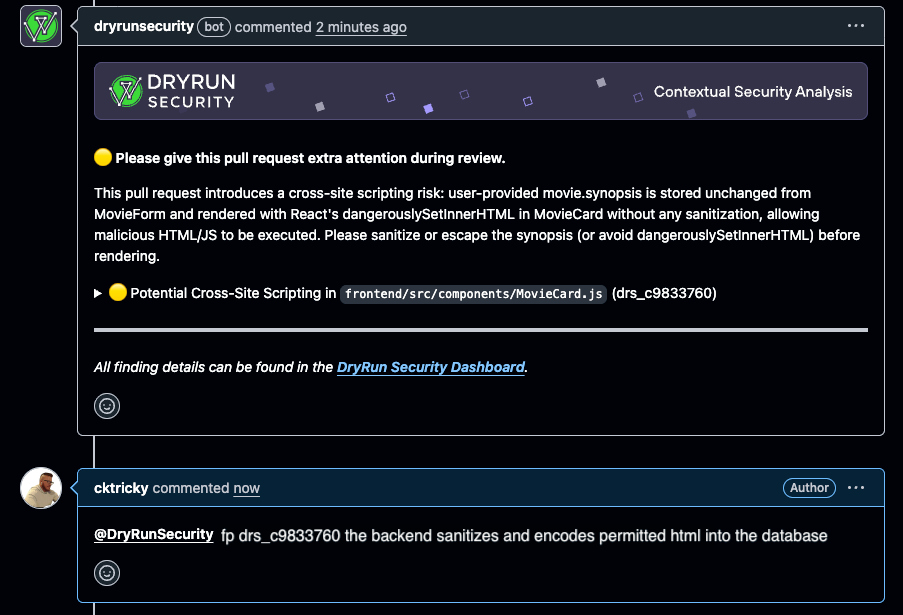
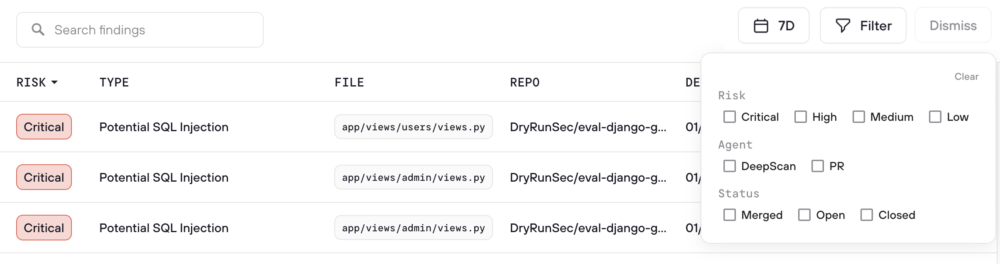
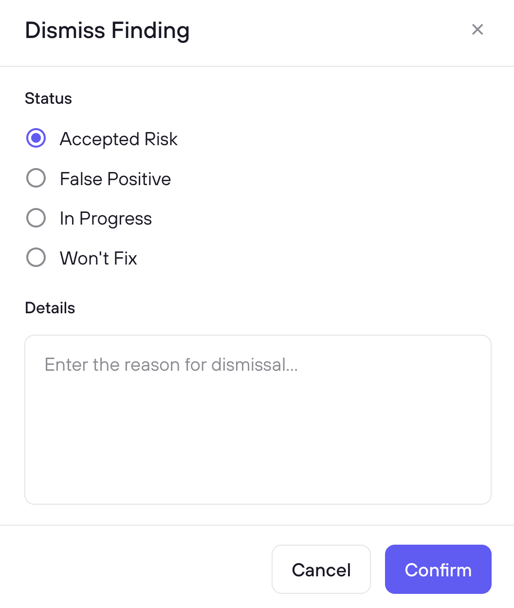

Finding Tuning with Feedback
Tune security findings and reduce false positives with feedback from developers and AppSec engineers.
DryRun Security knows that LLMs are not perfect. Even with a very low false positive rate, the system is designed to learn from your team. That is why DryRun Security lets both AppSec engineers and developers submit feedback directly back into the models, progressively calibrating scans to your codebase over time.
Every piece of feedback - whether a developer marks a finding as a false positive in a PR thread or an AppSec engineer dismisses it from the Risk Register - feeds into the Code Security Knowledge Graph and improves future scan accuracy across your organization.
Feedback from the SCM (Developers)
Developers can submit feedback directly from the pull request thread without leaving their workflow. When DryRun Security flags a finding in a PR, the developer can reply in the PR comment thread to mark it as a false positive or nitpick:
@dryrunsecurity FP [issue ID]
When a developer submits feedback this way, DryRun Security:
- Analyzes the feedback and logs it for the audit trail
- Removes the finding from the active list
- Regenerates the PR summary comment to reflect the updated findings
- Feeds the signal back into the system to improve future scans
No tickets, no context switching, no waiting. The feedback loop stays where developers already work. Learn more about PR feedback in DryRun Security.

Feedback from the Risk Register (AppSec)
AppSec engineers manage finding dismissals from the Risk Register dashboard, which provides a centralized view across all repositories and scan types. From the Risk Register, AppSec teams can:
- Review all dismissed findings with full context: who dismissed it, when, and why
- Override dismissals when a finding represents real risk that was incorrectly dismissed
- Monitor dismissal patterns across the organization to identify trends and training opportunities
- Use the audit trail to ensure all triage decisions are intentional and documented
Select one or more findings using the checkboxes, then click Triage to choose a reason and optionally add context. When you mark a finding as False Positive, DryRun Security fingerprints the vulnerability pattern and suppresses it in future scans automatically. The context you provide feeds into the Knowledge Graph to improve detection accuracy over time.


Use Cases
Weeding Out False Positives
When a finding is not real or does not apply to the codebase, developers can mark it as a false positive directly from the PR using @dryrunsecurity FP [issue ID]. The feedback is logged and improves future scans so the same false positive does not resurface. AppSec engineers can also mark false positives from the Risk Register with additional context that feeds into the Knowledge Graph.
Marking Low-Impact Findings as Nitpick
Some findings are technically valid but below the bar the team cares about. Marking them as nitpick removes them from the active list without dismissing the class of issue entirely. This keeps the signal-to-noise ratio high for developers while preserving the finding data for AppSec review.
Triaging Accepted Risk / Won't Fix
When a team knowingly accepts a risk and will not remediate it, the finding can be dismissed as won't fix. AppSec engineers can review these in the Risk Register to ensure accepted risk is intentional and documented. The audit trail provides visibility into which risks have been accepted, by whom, and with what justification.
Unblocking a PR Incorrectly Blocked by a Finding
If a finding is incorrectly blocking a merge via branch protection rules, developers can mark it as a false positive directly in the PR thread to unblock the merge without waiting for AppSec intervention. The feedback is logged so AppSec can review it afterward, and the signal improves future scans to prevent the same incorrect block from recurring.
How DryRun Security Learns from Feedback
Most security tools treat triage as a dead end: you dismiss a finding, and it disappears until it shows up again next week. DryRun Security treats every triage decision as a learning signal:
- False positive fingerprinting - When you mark a finding as a false positive, DryRun Security fingerprints the vulnerability pattern and automatically suppresses it in future PR scans and DeepScans.
- Context-based learning - When you add context explaining why a finding is safe, that context is stored and used to calibrate future analysis in similar situations across your codebase.
- Pattern recognition - Over time, triage decisions feed into the Code Security Knowledge Graph, improving accuracy for your specific frameworks, deployment patterns, and risk profile.
The result: false positive rates decrease over time as DryRun Security accumulates organizational knowledge from your team's feedback.
Dismissed Findings
You can view and manage dismissed findings in the Risk Register using the Dismissed filter option. This shows all previously dismissed findings with full context: the dismissal category, reason, who dismissed it, when, and any notes provided at the time of dismissal.
Each dismissed finding has a Restore button to bring it back to your active queue if circumstances change or the dismissal needs to be revisited.
The dismissal flow includes Resolved and Won’t Fix / Nitpick values in addition to the standard options, giving teams more precise categorization when triaging findings.
FAQs
What is Finding Triage?
Finding Triage lets you categorize a finding and record why, using a triage reason and optional context. Triaged findings are marked resolved in the UI, and the decisions feed back into DryRun Security to improve future scans.
Does DryRun Security actually learn from my triage decisions?
Yes. Every triage decision - the reason, the context you provide, the fingerprint - is stored in the Code Security Knowledge Graph. DryRun Security uses this to suppress duplicate findings immediately and to improve detection accuracy for similar patterns over time.
What happens when I mark a finding as a False Positive?
DryRun Security fingerprints the vulnerability pattern. If the same fingerprint is detected in a future PR scan or DeepScan, the finding is automatically suppressed.
How is the context field used?
Context is stored with the triage decision and used in two ways: immediately to suppress similar false positives, and over time to improve analysis accuracy through the Knowledge Graph.
Can developers submit feedback from their PR workflow?
Yes. Developers can reply directly in the PR thread with @dryrunsecurity FP [issue ID] to mark a finding as a false positive. DryRun Security removes the finding, regenerates the PR summary, and feeds the signal back into the system. Those decisions also sync to the Risk Register for AppSec review.
What is the difference between a false positive and a nitpick?
A false positive means the finding is not real or does not apply to the codebase. A nitpick means the finding is technically valid but below the bar the team cares about. Both are removed from the active list, but they are tracked separately so AppSec can monitor patterns.